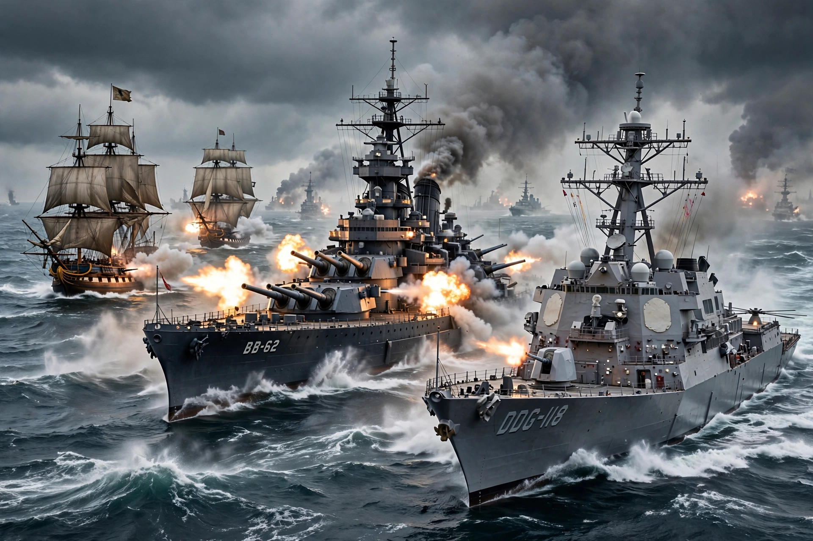

Domain: Sea, and littoral waters
Forces: Navies, naval aviation, marines
Platforms: Warships, submarines, aircraft carriers
Naval warfare is human combat in and on the sea, the ocean, or any other battlespace involving a major body of water. It is carried out by navies using warships, submarines, and naval aircraft to achieve sea control, sea denial, power projection, and protection of maritime trade.
Early naval battles include the Egyptian victory over the Sea Peoples (c. 1175 BC) and the Greek triumph at Salamis (480 BC). Rome defeated Carthage in the Punic Wars with boarding tactics. Gunpowder, line-of-battle sailing fleets, ironclads (Hampton Roads, 1862), dreadnought battleships, and the Russo-Japanese War's Battle of Tsushima (1905) successively transformed fleets. In the World Wars, submarines, aircraft carriers, and amphibious warfare dominated; Midway (1942) marked the ascendancy of carrier aviation.
Modern doctrine encompasses anti-surface, anti-air, anti-submarine, mine, and expeditionary warfare, nuclear deterrence patrols by ballistic-missile submarines, and missile-age concepts such as anti-access/area denial.